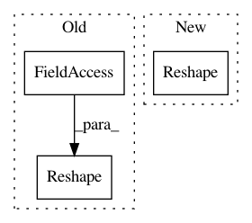

7a65d9993bdda4a5248f6aa313abf687faa031a6,hypergan/configurable_component.py,ConfigurableComponent,layer_linear,#ConfigurableComponent#Any#Any#Any#,334
Before Change
self.current_channels = shape[2]
self.current_width = shape[0]
self.current_height = shape[1]
layers.append(Reshape(self.current_channels, self.current_height, self.current_width))
if len(shape) == 2:
self.current_channels = shape[1]
After Change
self.nn_init(layers[0], options.initializer)
self.current_size = LayerSize(*reversed(shape))
if len(shape) != 1:
layers.append(Reshape(*self.current_size.dims))
return nn.Sequential(*layers)
In pattern: SUPERPATTERN
Frequency: 3
Non-data size: 3
Instances
Project Name: HyperGAN/HyperGAN
Commit Name: 7a65d9993bdda4a5248f6aa313abf687faa031a6
Time: 2020-06-27
Author: martyn@255bits.com
File Name: hypergan/configurable_component.py
Class Name: ConfigurableComponent
Method Name: layer_linear
Project Name: mil-tokyo/webdnn
Commit Name: d38d1c85932d62fa23779c2e7f491d7a55627c14
Time: 2017-07-03
Author: y.kikura@gmail.com
File Name: src/graph_transpiler/webdnn/frontend/keras/layers/pooling.py
Class Name:
Method Name: _convert_max_pooling1d
Project Name: mil-tokyo/webdnn
Commit Name: d38d1c85932d62fa23779c2e7f491d7a55627c14
Time: 2017-07-03
Author: y.kikura@gmail.com
File Name: src/graph_transpiler/webdnn/frontend/keras/layers/pooling.py
Class Name:
Method Name: _convert_average_pooling1d